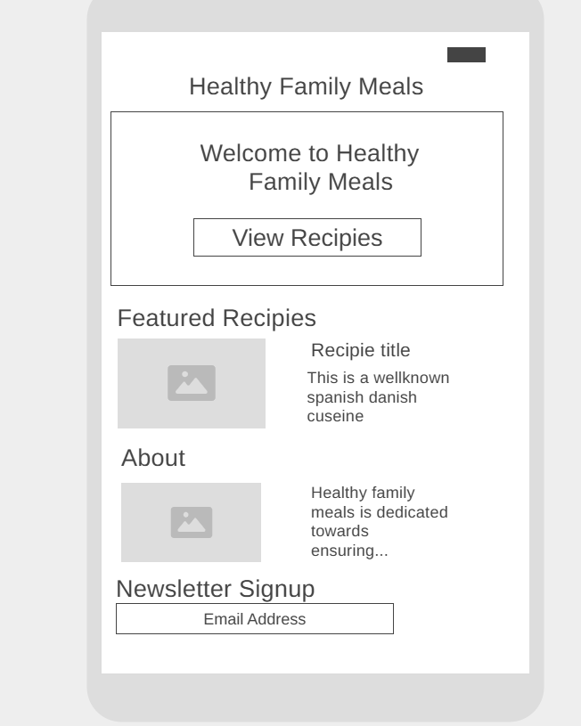
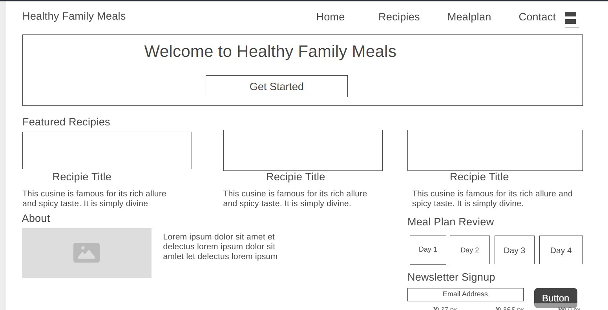

Site Name
Healthy Family Meals
This name clearly describes the website’s purpose: to provide simple, nutritious meal ideas tailored for busy families. It promotes the values of health, family bonding, and everyday accessibility.
Optional domain availability: healthyfamilymeals.org
Site Purpose
The purpose of this website is to provide families with simple, healthy meal plans, featured recipes, and tips for planning balanced meals. It aims to help families save time, reduce stress, and eat better together.
Scenarios
- What are some quick and healthy dinner ideas my kids will enjoy?
- Is there a meal plan I can follow that includes a grocery list?
- Can I get a day-by-day breakdown of family meals for the week?
Color Schema
The selected color palette is designed to reflect health, freshness, and trust:
- Primary Color: Forest Green (#2e7d32) – used for headings, buttons, and navigation.
- Secondary Color: Light Cream (#fff8e1) – used as the background color to give a warm, inviting tone.
- Accent Color: Coral (#ff7043) – used for hover effects and call-to-action buttons.
Typography
The selected fonts aim for readability and a friendly family-oriented tone:
- Headings: 'Playfair Display', serif – elegant and strong for emphasis.
- Body: 'Open Sans', sans-serif – clean and highly legible for reading on any screen.
Wireframe
Mobile View
Desktop View
Note: The wireframes include a center hero image with a heading, navigation bar, About section, Featured Recipes, Meal Plan Review section with Day 1–4 buttons, and a Newsletter signup with an email field and button.